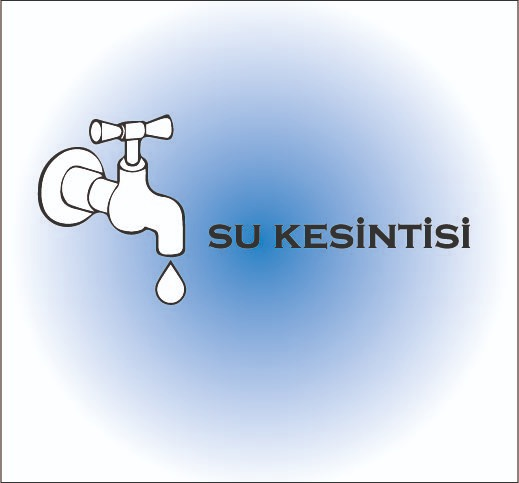
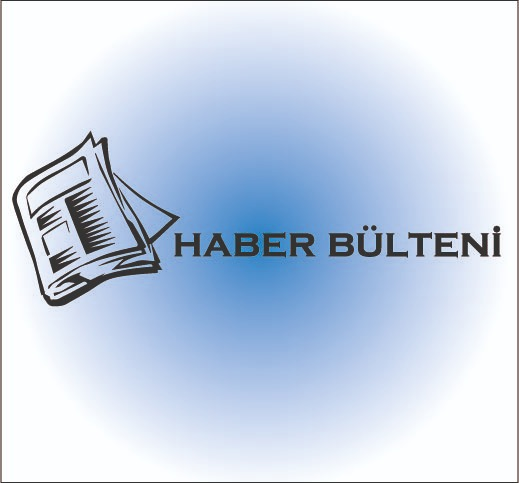
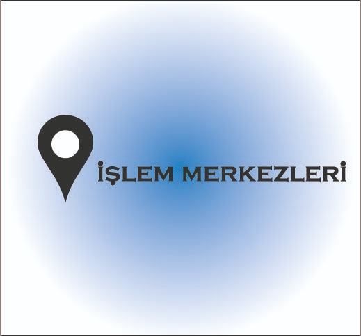
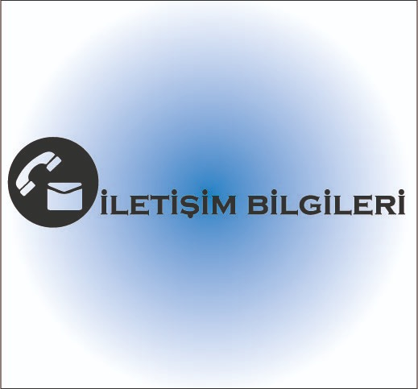

<ion-header color="" >
  <ion-toolbar color="primary">
    
  </ion-toolbar>
</ion-header>
<ion-header >
  
  <ion-item color="primary" *ngFor="let user of users">
   
     
     Sıcaklık     :     {{user.tmp}}
     
     Yağış     :     {{user.yagis}}
     
     Nem     :     {{user.nem}}
  
     
  </ion-item>
</ion-header>

<ion-content [fullscreen]="true" color="primary">
 
 

 
 
      <ion-button  color="light" class="faturasol"  (click)="nextpageFatura()"> 
           
      </ion-button>

      <ion-button color="light" class="faturasag"  (click)="nextpageSukesintileri()">
        
      </ion-button>
      
      <ion-button   color="light" class="faturasol" (click)="nextpageHaberler()">
        
      </ion-button>

      <ion-button   color="success" class="faturasag"  href="http://www.aski.gov.tr/TR/Anasayfa">
        
      </ion-button>
     
      <ion-button   color="light" class="faturasol" (click)="islem()" >
        
      </ion-button>
      
      <ion-button   color="light" class="faturasag" (click)="nextpageIletisim()">
        
      </ion-button>


   
</ion-content>
